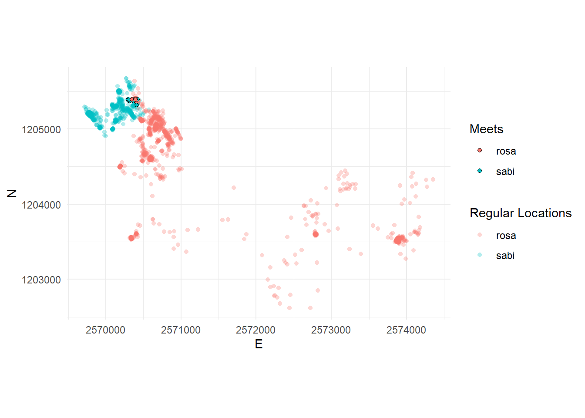

# A tibble: 6 × 7
# Groups: TierID [1]
TierID TierName CollarID DatetimeUTC E N DatetimeRound
<chr> <chr> <dbl> <dttm> <dbl> <dbl> <dttm>
1 002A Sabi 12275 2015-04-01 00:00:11 2.57e6 1.21e6 2015-04-01 00:00:00
2 002A Sabi 12275 2015-04-01 00:15:22 2.57e6 1.21e6 2015-04-01 00:15:00
3 002A Sabi 12275 2015-04-01 00:30:11 2.57e6 1.21e6 2015-04-01 00:30:00
4 002A Sabi 12275 2015-04-01 00:45:16 2.57e6 1.21e6 2015-04-01 00:45:00
5 002A Sabi 12275 2015-04-01 01:00:44 2.57e6 1.21e6 2015-04-01 01:00:00
6 002A Sabi 12275 2015-04-01 01:15:17 2.57e6 1.21e6 2015-04-01 01:15:00Tasks and inputs
Task 1: Write your own functions
Create the following two functions:
- A function which calculates a persons BMI based on their height and weight (Equation 21.1)
- A function which converts degrees Celcius to Farenheight (Equation 21.2)
- A function which calculates the (Euclidean) distance between two sets of coordinates (\(x_1\), \(y_1\) and \(x_2\), \(y_2\)), see Equation 21.3
\[ \text{BMI} = \frac{\text{Weight (kg)}}{\text{Height (m)}^2} \tag{21.1}\]
\[ \text{Farenheight} = \text{Celcius} \times \frac{9}{5} + 32 \tag{21.2}\]
\[ \text{Euclidean distance} = \sqrt{(x_2 - x_1)^2+(y_2 - y_1)^2} \tag{21.3}\]
Task 2: Prepare Analysis
In the next tasks we will look for “meet” patterns in our wild boar data. To simplify this, we will only use a subset of our wild boar data: The individuals Rosa and Sabi for the timespan 01.04.2015 - 15.04.2015. Use the dataset wildschwein_BE_2056.csv (on moodle). Import the csv as a data.frame and filter it with the aforementioned criteria. You do not need to convert the data.frame to an sf object.
Task 3: Create Join Key
Have a look at your dataset. You will notice that samples are taken at every full hour, quarter past, half past and quarter to. The sampling time is usually off by a couple of seconds.
To compare Rosa and Sabi’s locations, we first need to match the two animals temporally. For that we can use a join, but need identical time stamps to serve as a join key. We therefore need to slightly adjust our time stamps to a common, concurrent interval.
The task is therfore to round the minutes of DatetimeUTC to a multiple of 15 (00, 15, 30,45) and store the values in a new column1. You can use the lubridate function round_date() for this. See the examples here to see how this goes.
Your new dataset should look something like this (note the additional column):
Task 4: Measuring distance at concurrent locations
To measure the distance between concurrent locations, we need to follow the following steps.
- Split the
wildschwein_filterobject into onedata.frameper animal - Join2 these datasets by the new
Datetimecolumn created in the last task. The joined observations are temporally close. - In the joined dataset, calculate Euclidean distances between concurrent observations and store the values in a new column
- Use a reasonable threshold on
distanceto determine if the animals are also spatially close enough to constitute a meet (we use 100 meters). Store this Boolean information (TRUE/FALSE) in a new column
Task 5: Visualize data
Now, visualize the meets spatially in a way that you think reasonable. For example in the plot as shows below. To produce this plot we:
- Used the individual dataframes from
rosaandsabi(from the previous task) - Used the joined dataset (also from the previous task), filtered to only the meets
- Manually changed the x and y axis limits

Task 6 (optional): Visualize data as timecube with plotly
Finally, you can nicely visualize the meeting patterns and trajectories in a Space-Time-Cube (Hägerstraand 1970) with the package plotly. There are some nice ressources available online.

Submission
To submit your exercise, provide us with the URL of the rendered quarto document (e.g. on QuartoPub, RPubs or GitHub Pages) on moodle, as you did last week.
NoteIf you use GitHub…
You can give other GitHub users write access to your repository throught the repository settings. You might want to use this this for your semester project. To practice this, add Evelyn (@DLND8) and Nils (@ratnanil) to your GitHub repo:
- Go to your GitHub repository on GitHub.com
- Go to the repository settings by clicking on the Settings tab
- In the left panel, click on Collaborators and teams and then Add people
- Add the mentioned Persons via their GitHub Usernames, give them Write privileges.
Please note: We are manipulating our time stamps without adjusting the x,y-coordinates. This is fine for our simple example, but we would advice against this in a more serious research endeavour, e.g. in your semester projects. One simple approach would be to linearly interpolate the positions to the new timestamps. If you choose Option A the wild boar projects as your semester projects, you should aim for a linear interpolation. Get in touch if you need help with this.↩︎
We recommend using one
dplyrs join methods (inner_join(),left_join(),right_join()orfull_join()), which one is appropriate? Tip: specifysuffixto prevent column names ending in.xor.y.↩︎